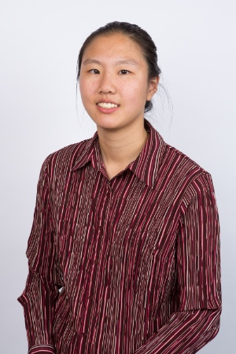

Joyce Yang
Java Programmer
EDUCATION
EXPERIENCE
AoPS Academy, Gaithersburg, MD
Instructor of Mathematics 02/17-present
-
Help students grow and develop mathematics skills
-
As part of math competition preparation course, help students gain problem solving skills
Montgomery College Java Boot Camp, Gaithersburg, MD
Student 10/17- present
- Participating in an 8-week, full-time boot camp.
Montgomery College Java Boot Camp, Gaithersburg, MD
Student 05/17-08/17
- Coded 19 Java web projects using controllers, completing an 8-week, full-time boot camp.
-
Wrote secure applications and deployed them to cloud services.
Yang Academy , Gaithersburg, MD
AP Physics and AP Calculus BC Teacher 02/17-09/17
-
Taught AP Physics and AP Calculus BC, guiding students to reach understanding.
-
Answered students’ questions as part of AP test preparation.
Harvey Mudd College Division of Student Affairs, Claremont, CA
Tutor and Office Assistant 12/15-12/16
-
Worked with students on mathematics, physics and chemistry. Made science concepts relatable.
NC State University REU, Raleigh, NC
Mathematics Researcher 05/14-07/14
- Worked on a team in Maple to conduct research in abstract algebra.
- Wrote code and employed linear algebra, analyzing properties of maps under Prof Aloysius Helminck and Ruth Haas.
Harvey Mudd College, Claremont CA
Head Grader for Differential Equations 01/14-05/14
- Supervised a team of 15 people and was responsible for their work.
- Organized grading for first-year differential equations class.
Yang Academy, Rockville, MD
Mathematics Researcher and Tutor 06/09-08/12
-
Created 150 original diagrams to determine pattern among atomic systems. Searched systems
of 200 to 10,000 atoms and produced 16 optimal results.
SKILLS
Courses: Intensive Java, PHP, Javascript, Math of Big Data, Systems Engineering, Intermediate Probability, Operations Research, Intermediate Linear Algebra, Statistical Inference, Partial Differential Equations, Computer Science
Computer: jQuery, HTML, R, Javascript, CSS, SPSS, Python, Visual Basic, Java
Languages: English, Mandarin, French